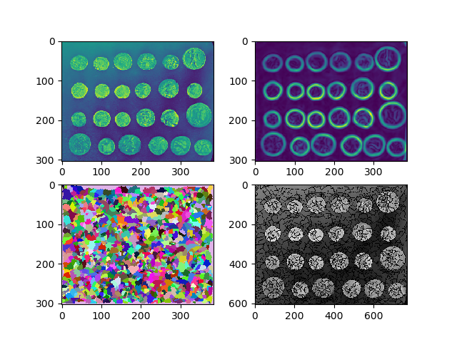

Cell 1 Features¶
Compute features for 1-cells
Out:
(3512, 42) 42
(3512, 114)
# sphinx_gallery_thumbnail_number = 1
from __future__ import print_function, division
import nifty.cgp as ncgp
import nifty.segmentation as nseg
import skimage.data as sdata
import skimage.filters as sfilt
# plotting
import pylab
# get data
img = sdata.coins()
# edge indicator
edgeIndicator = sfilt.prewitt(sfilt.gaussian(img, 3))
# watersheds
overseg = nseg.seededWatersheds(edgeIndicator,
method='node_weighted', acc='min')
f = pylab.figure()
f.add_subplot(2,2,1)
pylab.imshow(img/255)
f.add_subplot(2,2,2)
pylab.imshow(edgeIndicator)
f.add_subplot(2,2,3)
pylab.imshow(overseg, cmap=nseg.randomColormap(overseg.max()+1))
f.add_subplot(2,2,4)
pylab.imshow(nseg.markBoundaries(img, overseg))
pylab.show()
# cgp
assert overseg.min() == 1
tgrid = ncgp.TopologicalGrid2D(overseg)
geometry = tgrid.extractCellsGeometry()
bounds = tgrid.extractCellsBounds()
boundedBy = {1:bounds[0].reverseMapping(),
2:bounds[1].reverseMapping()}
# compute features
cell1Features, cell1FeatureNames = ncgp.cell1Features(tgrid=tgrid, geometry=geometry,
bounds=bounds, boundedBy=boundedBy)
print(cell1Features.shape)
Total running time of the script: ( 0 minutes 1.343 seconds)